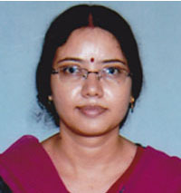

Courses
Undergraduate
Semester Wise Three years B.A. Honours Course
(Under CBCS, University of Calcutta)
Intake Capacity : 38
Postgraduate
Semester Wise Two years M.A. Course
(Under CBCS, University of Calcutta)
Intake Capacity : 23
About the Department
The Bengali Department of this college started its journey from 1879 (intermediate). Intellectuals from other disciplines devoted their time for teaching Bengali, because the college had no separate teacher for Bengali in its early stage. Pandit Madan Mohan Tarkalankar, Kabi Kamini Roy and many other reputed teachers took regular classes for a long time in Bengali Department for the necessary momentum. The department formally started functioning in 1943. Smt. Bharati Mukherjee joined as the first lecturer in Bengali. In 1948, Prof. Lila Roy joined, followed by Dr. Dipti Tripathi as Assistant Professor. Smt. Sunanda Dasgupta for some time and Smt. Kamala Kanjilal served the department for many years. The department gathered the critical mass of faculties in 1979, after joining of many eminent academics such as Dr. Uma Roy, Karabi Bhattacharyya, Smt. Sanghamitra Dutta, Smt. Chandra Mukherjee, Smt. Shanta Sen, Smt. Krishna Palit and Smt. Banimanjari Das.
In keeping with the NAAC Peer Team's recommendation, a Post Graduate course was introduced in the year 2014.The Post Graduate Department was granted academic autonomy and conducting the examination and being in charge of the examination process. From the session 2018-19 the PG course has been undertaken directly by the University of Calcutta. Presently the Department has ten fulltime teachers, including 4 Associate Professors and 6 Assistant Professors. Eminent teachers and educationists from various fields regularly share their knowledge and skill with our students as guest faculty.
Faculty
 |
Smt. Sumita Mukhopadhyay Associate Professor and HOD M.A.,M.Phil. |
 |
Smt. Suchimita Maitra Associate Professor M.A., M.Phil., B.Lib. |
Smt. Tanwi Mukhopadhyay Associate Professor M.A. | |
| Dr. Sudakshina Ghosh Associate Professor M.A.,Ph.D. |
Sri. Sumanta Mukhopadhay Associate Professor M.A. |
 | Dr. Sharmistha Niyogi Associate Professor M.A.,B.Ed.,Ph.D. | ||
 |
Dr. Anwesha Khan Assistant Professor M.A.,Ph.D. |
Dr. Anindita Datta Associate Professor M.A.,Ph.D. |
 |
Smt. Sohini Bhattacharya Associate Professor M.A., B.Ed. |
Infrastructure